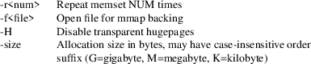

memhog − Allocates memory with policy for testing
memhog [ −r<NUM> ] [ size kmg ] [ policy nodeset ] [ −f<filename> ]
memhog mmaps a memory region for a given size and sets the numa policy (if specified). It then updates the memory region for the given number of iterations using memset.

Supported
numa-policies:
interleave
Memory will be allocated using round robin on nodes. When memory cannot be allocated on the current interleave, target fall back to other nodes. Multiple nodes may be specified.
membind
Only allocate memory from nodes. Allocation will fail when there is not enough memory available on these nodes. Multiple nodes may be specified.
preferred
Preferably allocate memory on node, but if memory cannot be allocated there fall back to other nodes. This option takes only a single node number.
default
Memory will be allocated on the local node (the node the thread is running on)
# Allocate a 1G
region, mmap backed by memhog.mmap file, membind to
node 0, repeat test 6 times
memhog -r6 1G --membind 0 -fmemhog.mmap
# Allocate a 1G region,
iterleave across nodes 0,1,2,3, repeat test 4
times
memhog -r4 1G --interleave 0-3
# Allocate a 1G region, (implicit) default policy, repeat test 8 times
memhog -r8 1G
Andi Kleen (ak@suse.de)
GPL v2
mmap(2), memset(3), numactl(8), numastat(8)